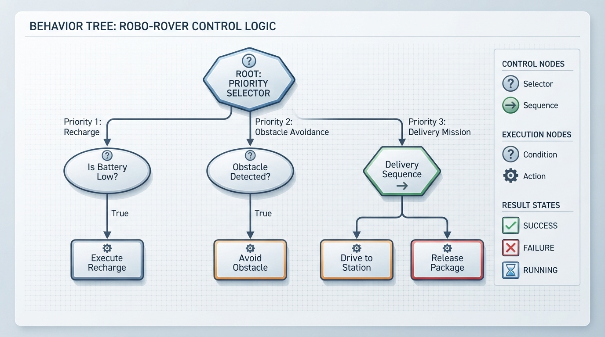
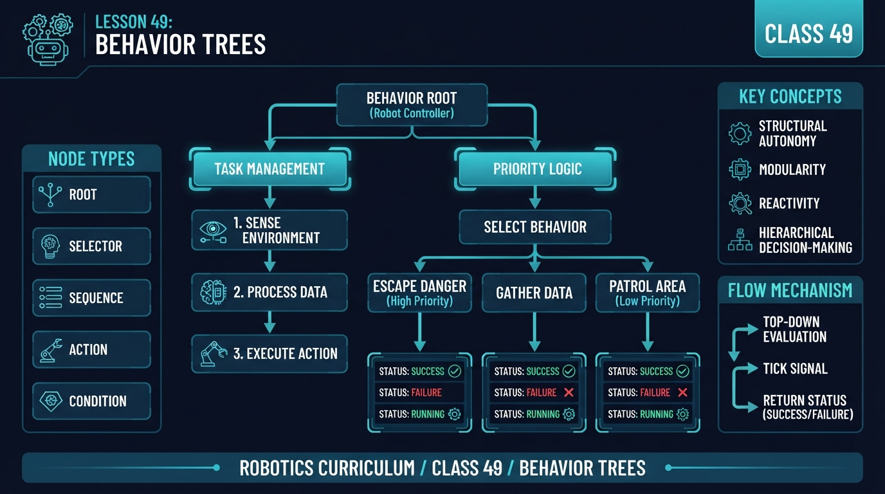
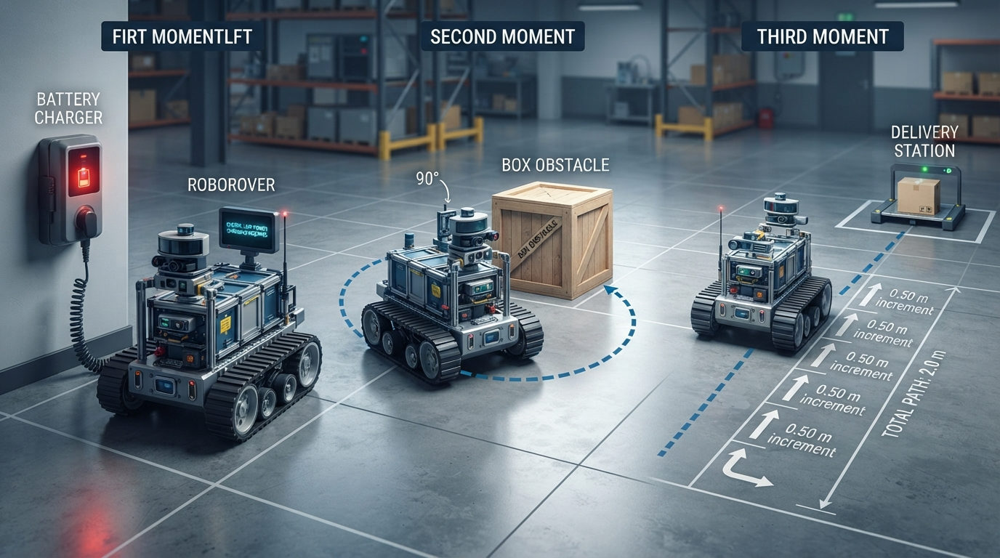
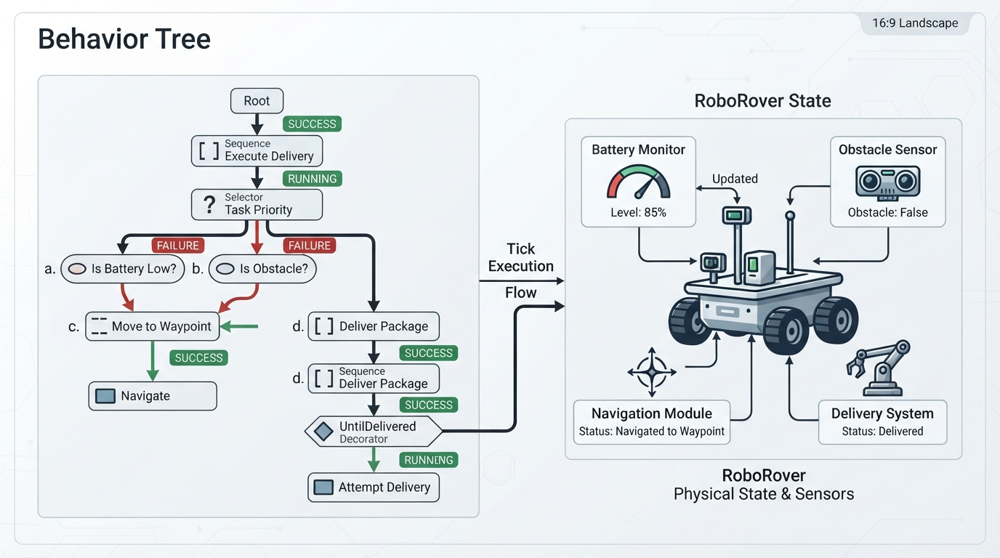

Class 49: Behavior Trees
Where We Are in the Robotics Journey
RoboRover has learned to represent situations with a state machine, using modes such as:
SEARCHINGDRIVINGAVOIDINGCHARGINGDELIVERING
A state machine is effective when its modes and transitions remain manageable. As RoboRover gains more capabilities, another question becomes important:
Which behavior should have priority right now?
Suppose RoboRover is driving toward a delivery station. Its battery becomes low, an obstacle appears, and an emergency-stop button is pressed. A large collection of state transitions can become difficult to inspect and maintain.
Today we will organize these decisions with a behavior tree: a hierarchical structure that repeatedly evaluates conditions and selects actions according to explicit control-flow rules.
In the next class, we will build a mental model of ROS 2, a robotics software framework. Behavior trees fit naturally into that model because they can coordinate sensors, navigation, motor commands, and other software components.
Today We Will Learn
By the end of this class, you should be able to:
- Explain what a behavior tree is.
- Describe
Sequence,Selector, andActionnodes. - Use the statuses
SUCCESS,FAILURE, andRUNNING. - Trace a behavior tree one tick at a time.
- Write a small Python behavior-tree simulation.
- Explain one advantage and one limitation compared with a state machine.
- Distinguish a branch status from the status of the complete mission.
- Explain initialization, ongoing execution, completion, and cancellation for a real action interface.
- Explain why status names and composite semantics can vary between software libraries.
- Distinguish reactive and memory-based composite-node semantics.
- Explain preemption: stopping a lower-priority running behavior so a higher-priority behavior can take control.
2-Minute Recap
A state machine stores one current state. For example:
DRIVING --obstacle detected--> AVOIDING
AVOIDING --path clear---------> DRIVING
DRIVING --battery low---------> CHARGINGThe state machine asks:
“What state am I in, and which transition is enabled?”
A behavior tree asks:
“Given the current situation, which branch should I try, and what should I do if it succeeds, fails, or is still working?”
Both approaches can represent robot behavior. They organize decisions differently.
The Big Idea

Figure: A selector chooses the first usable branch, while a sequence performs required steps in order. In the status flow, FAILURE permits the next selector child, while SUCCESS or RUNNING stops that selector evaluation.
Imagine a checklist arranged as a decision tree:
RoboRover mission
├── If battery is low: recharge
├── Else if obstacle is present: avoid obstacle
└── Else: drive toward delivery stationA common behavior-tree convention uses three results:
SUCCESS: the node achieved its intended result.FAILURE: the node could not or should not perform its intended result.RUNNING: the node has started but needs more time or future ticks.
A tick is one request to evaluate the tree. An action does not need to finish during one tick. For example, DriveToStation may return RUNNING while the simulated wheels continue moving.
Status names and composite-node semantics are conventions rather than one universally identical standard. Libraries can add statuses, use different names, or provide variants, so always check the library documentation.
Selector semantics in this lesson
The Selector is a reactive priority selector, also called a non-memory selector:
- On every tick, it starts with its first child.
- It evaluates children from left to right.
- It stops at the first child that returns
SUCCESSorRUNNING. - It proceeds to the next child only when the current child returns
FAILURE.
Because it restarts at child 0, it can preempt a running lower-priority child. Preemption means interrupting that child so a higher-priority behavior can be evaluated and take control. In this program, preemption calls the previous child’s halt() method. That method only changes the simulated drive-command flag; it is not a guarantee of safe physical stopping.
A memory selector remembers the child that was running and resumes there instead of restarting from the first child.
Sequence semantics in this lesson
The Python Sequence is a memory sequence:
- It evaluates children from left to right.
- When a child returns
RUNNING, it records that child. - On the next tick, it resumes at the recorded child.
- After success or failure, it resets its remembered child.
A reactive sequence would restart at child 0 on every tick.
| Composite | Restarts at child 0 each tick? | Remembers a running child? | Typical use |
|---|---|---|---|
| Reactive selector | Yes | No | Recheck priorities and permit preemption |
| Memory selector | No | Yes | Continue a selected alternative |
| Reactive sequence | Yes | No | Recheck prerequisites continuously |
| Memory sequence | No | Yes | Resume a multi-step task |
Try it: For the delivery sequence, identify the child remembered after the first drive tick. Answer: The sequence remembers Drive to station, because it returned RUNNING.
See It in Your Head
AI-Generated Engineering Visual · Professor OS

How to read this visual: Trace the signal or idea from left to right. Identify where SUCCESS, FAILURE, and RUNNING leave each node. Then predict which branch is evaluated when a higher-priority condition changes.
Picture a tree with the mission root at the top:
Mission root
|
PRIORITY SELECTOR
/ | \
/ | \
Recharge Avoid Deliver
branch branch branchThe selector examines its children from left to right on every tick:
- Try
Recharge. - If it returns
FAILURE, tryAvoid. - If that returns
FAILURE, tryDeliver. - Stop when a child returns
SUCCESSorRUNNING.
A branch returning SUCCESS or RUNNING stops the selector for that tick.
Now expand the delivery branch:
DELIVER SEQUENCE
├── Drive to station
└── Release packageThis lesson uses a memory Sequence:
- If
Drive to stationfails, stop and returnFAILURE. - If it is still moving, remember it and return
RUNNING. - On the next tick, resume the running drive child.
- Only if it succeeds, try
Release package. - After the sequence succeeds or fails, reset its remembered position.
Try it: If Recharge returns FAILURE and Avoid returns RUNNING, is Deliver evaluated during that selector tick? Answer: No. RUNNING stops the selector for that tick.
Core Concept
Conditions and actions
A condition node observes state and answers a question:
- Is the battery below 20%?
- Is an obstacle detected?
- Has the package been delivered?
In this lesson, conditions are pure observations. A condition returns SUCCESS when its statement is true and FAILURE when it is false.
An action node attempts to change the world:
- Recharge.
- Turn away from an obstacle.
- Drive.
- Open a gripper.
In this lesson, actions may mutate the robot dictionary. An action may return RUNNING for several ticks when work is unfinished.
In a production robotics system, an action commonly has:
- Initialization: acquire resources and start the operation.
- Execution: continue the operation on later ticks.
- Completion: return
SUCCESSorFAILURE. - Cancellation or halt: safely stop if a higher-priority behavior takes over.
The Python lab includes a minimal halt interface. It does not model threads, hardware drivers, communication timeouts, or resource ownership. A real halt() implementation must be designed with the hardware and safety requirements of the robot.
A RoboRover tree
ROOT: continue until package delivered, or propagate terminal failure
└── REACTIVE PRIORITY SELECTOR
├── Recharge if battery is low
├── Avoid if obstacle is detected
└── Delivery memory sequence
├── Drive to station
└── Release packageThe mission root distinguishes temporary noncompletion from terminal failure:
RUNNINGmeans the mission is not finished but may continue.SUCCESSmeans the package has been delivered.FAILUREmeans the mission cannot proceed under the current policy, or a mission timeout has occurred.
The safety extension later uses a custom imperative wrapper, SafetyGuard, rather than adding safety as an ordinary selector child. This makes the policy explicit: halt the normal mission before checking the safety behavior, prevent normal motion while blocked, and latch persistent safety failure. A behavior-tree library could instead provide a priority selector, guard decorator, or parallel safety monitor; the correct choice depends on the library’s halt and scheduling semantics.
Try it: Which node is responsible for remembering that driving is still in progress? Answer: The memory Sequence, through its running_index.
Math Without Fear
Suppose RoboRover drives at:
If the station is \(2.0\ \text{m}\) away:
This is an ideal physical calculation. The Python program does not simulate physical time. Its four drive increments represent four ticks, not four one-second intervals.
Worked Robotics Example

Figure: The numerical example combines behavior priority with distance, speed, and battery accounting.
In the program, distance means distance already traveled from the starting point, not distance remaining to the station. The target is stored separately as goal_distance.
RoboRover begins with:
- traveled distance: \(0.0\ \text{m}\);
- goal distance: \(2.0\ \text{m}\);
- battery level: \(15\) energy units;
- low-battery threshold: \(20\);
- an obstacle detected;
- recharge adding \(20\) units;
- driving costing \(5\) units per \(0.50\ \text{m}\).
The first tick evaluates the children internally:
| Internal evaluation | Child | Result | What happens next |
|---|---|---|---|
| 1 | Recharge condition | SUCCESS | Recharge action runs |
| 2 | Recharge action | SUCCESS | Recharge branch succeeds; selector stops |
| — | Avoid branch | Not evaluated | A selector stops after SUCCESS |
| — | Delivery branch | Not evaluated | A selector stops after SUCCESS |
The battery becomes:
The branch returns SUCCESS, but the mission root returns RUNNING because delivery has not occurred.
On tick 2:
| Internal evaluation | Child | Result | What happens next |
|---|---|---|---|
| 1 | Recharge condition | FAILURE | Try the next selector child |
| 2 | Avoid condition | SUCCESS | Run avoidance |
| 3 | Avoid action | SUCCESS | Avoidance branch succeeds; selector stops |
| — | Delivery branch | Not evaluated | A selector stops after SUCCESS |
The second tick avoids the obstacle. The root remains RUNNING.
On tick 3, the recharge condition fails, the avoidance condition fails, and the delivery branch is evaluated:
| Internal evaluation | Child | Result | What happens next |
|---|---|---|---|
| 1 | Recharge condition | FAILURE | Try avoidance |
| 2 | Avoid condition | FAILURE | Try delivery |
| 3 | Drive action | RUNNING | Delivery sequence and selector return RUNNING |
Ticks 3 through 6 drive four increments:
The driving cost is:
The final battery is:
On tick 6, driving reaches the goal and returns SUCCESS. The sequence immediately evaluates release_package, which also returns SUCCESS. The root then returns SUCCESS.
This simplified policy does not reserve energy for a return trip. That is intentional and would need to be improved for a real robot.
Python Lab

Figure: Each tick evaluates the tree and updates a small model of RoboRover's world. Inspect how SUCCESS, FAILURE, and RUNNING flow from conditions and actions to the mission root.
The following complete Python 3.7 program implements conditions, actions, halt behavior, a memory sequence, a reactive selector, a mission root, and tests for successful delivery and timeout behavior.
from enum import Enum
class Status(Enum):
SUCCESS = 1
FAILURE = 2
RUNNING = 3
class Node(object):
def tick(self, robot):
raise NotImplementedError
def halt(self, robot):
pass
class Condition(Node):
def __init__(self, test):
self.test = test
def tick(self, robot):
return Status.SUCCESS if self.test(robot) else Status.FAILURE
class Action(Node):
def __init__(self, function, halt_function=None):
self.function = function
self.halt_function = halt_function
def tick(self, robot):
return self.function(robot)
def halt(self, robot):
if self.halt_function is not None:
self.halt_function(robot)
class Sequence(Node):
def __init__(self, children):
self.children = children
self.running_index = 0
def tick(self, robot):
index = self.running_index
while index < len(self.children):
result = self.children[index].tick(robot)
if result == Status.RUNNING:
self.running_index = index
return Status.RUNNING
if result == Status.FAILURE:
self.running_index = 0
return Status.FAILURE
index += 1
self.running_index = 0
return Status.SUCCESS
def halt(self, robot):
if self.running_index < len(self.children):
self.children[self.running_index].halt(robot)
self.running_index = 0
class Selector(Node):
def __init__(self, children):
self.children = children
self.running_child = None
def tick(self, robot):
previous_running_child = self.running_child
for child in self.children:
result = child.tick(robot)
if result != Status.FAILURE:
if (
previous_running_child is not None
and previous_running_child is not child
):
previous_running_child.halt(robot)
self.running_child = (
child if result == Status.RUNNING else None
)
return result
if previous_running_child is not None:
previous_running_child.halt(robot)
self.running_child = None
return Status.FAILURE
def halt(self, robot):
if self.running_child is not None:
self.running_child.halt(robot)
self.running_child = None
class UntilDelivered(Node):
def __init__(self, child, max_ticks):
self.child = child
self.max_ticks = max_ticks
self.ticks_used = 0
def tick(self, robot):
if robot.get("delivered", False):
return Status.SUCCESS
if self.ticks_used >= self.max_ticks:
robot["failure_reason"] = "mission timeout"
self.child.halt(robot)
return Status.FAILURE
self.ticks_used += 1
result = self.child.tick(robot)
if robot.get("delivered", False):
return Status.SUCCESS
if result == Status.FAILURE:
robot["failure_reason"] = "all available branches failed"
return Status.FAILURE
if self.ticks_used >= self.max_ticks:
robot["failure_reason"] = "mission timeout"
self.child.halt(robot)
return Status.FAILURE
return Status.RUNNING
def halt(self, robot):
self.child.halt(robot)
def battery_is_low(robot):
return robot["battery"] < 20
def obstacle_is_present(robot):
return robot["obstacle"]
def recharge_if_needed(robot):
if robot["battery"] < 20:
robot["battery"] += 20
return Status.SUCCESS
return Status.FAILURE
def avoid_obstacle(robot):
if robot["obstacle"]:
robot["obstacle"] = False
return Status.SUCCESS
return Status.FAILURE
def drive_to_station(robot):
if robot["distance"] >= robot["goal_distance"]:
robot["drive_command_active"] = False
return Status.SUCCESS
robot["drive_command_active"] = True
robot["distance"] += 0.50
robot["battery"] -= 5
if robot["distance"] >= robot["goal_distance"]:
robot["drive_command_active"] = False
return Status.SUCCESS
return Status.RUNNING
def halt_drive(robot):
robot["drive_command_active"] = False
def release_package(robot):
robot["delivered"] = True
return Status.SUCCESS
def build_tree():
recharge_branch = Sequence([
Condition(battery_is_low),
Action(recharge_if_needed)
])
avoid_branch = Sequence([
Condition(obstacle_is_present),
Action(avoid_obstacle)
])
delivery_branch = Sequence([
Action(drive_to_station, halt_function=halt_drive),
Action(release_package)
])
return UntilDelivered(
Selector([
recharge_branch,
avoid_branch,
delivery_branch
]),
max_ticks=20
)
def run_permanently_running_timeout_test():
robot = {"delivered": False, "failure_reason": None}
tree = UntilDelivered(
Action(lambda state: Status.RUNNING),
max_ticks=20
)
result = None
for evaluation in range(20):
result = tree.tick(robot)
if evaluation < 19:
assert result == Status.RUNNING
assert result == Status.FAILURE
assert tree.ticks_used == 20
assert robot["failure_reason"] == "mission timeout"
def run_success_without_delivery_timeout_test():
robot = {"delivered": False, "failure_reason": None}
tree = UntilDelivered(
Action(lambda state: Status.SUCCESS),
max_ticks=3
)
result = None
for evaluation in range(3):
result = tree.tick(robot)
if evaluation < 2:
assert result == Status.RUNNING
assert result == Status.FAILURE
assert tree.ticks_used == 3
assert robot["failure_reason"] == "mission timeout"
assert robot["delivered"] is False
def main():
robot = {
"battery": 15,
"distance": 0.0,
"goal_distance": 2.0,
"obstacle": True,
"delivered": False,
"failure_reason": None,
"drive_command_active": False
}
tree = build_tree()
ticks = 0
while True:
ticks += 1
result = tree.tick(robot)
print(
"tick={0}, result={1}, distance={2:.2f} m, "
"battery={3}, obstacle={4}, delivered={5}".format(
ticks,
result.name,
robot["distance"],
robot["battery"],
robot["obstacle"],
robot["delivered"]
)
)
if result != Status.RUNNING:
break
assert result == Status.SUCCESS
assert robot["delivered"] is True
assert ticks == 6
assert robot["distance"] == 2.0
assert robot["battery"] == 15
assert robot["obstacle"] is False
assert robot["failure_reason"] is None
assert robot["drive_command_active"] is False
run_permanently_running_timeout_test()
run_success_without_delivery_timeout_test()
print("Verified: delivery completed in 6 ticks.")
print("Verified: final distance is 2.0 m.")
print("Verified: final battery is 15 energy units.")
print("Verified: permanent RUNNING tree timed out on evaluation 20.")
print("Verified: undelivered SUCCESS also timed out on evaluation 3.")
if __name__ == "__main__":
main()The verified output is:
tick=1, result=RUNNING, distance=0.00 m, battery=35, obstacle=True, delivered=False
tick=2, result=RUNNING, distance=0.00 m, battery=35, obstacle=False, delivered=False
tick=3, result=RUNNING, distance=0.50 m, battery=30, obstacle=False, delivered=False
tick=4, result=RUNNING, distance=1.00 m, battery=25, obstacle=False, delivered=False
tick=5, result=RUNNING, distance=1.50 m, battery=20, obstacle=False, delivered=False
tick=6, result=SUCCESS, distance=2.00 m, battery=15, obstacle=False, delivered=True
Verified: delivery completed in 6 ticks.
Verified: final distance is 2.0 m.
Verified: final battery is 15 energy units.
Verified: permanent RUNNING tree timed out on evaluation 20.
Verified: undelivered SUCCESS also timed out on evaluation 3.The branch status and root mission status are different concepts. On tick 1, the recharge branch returns SUCCESS, but the root returns RUNNING because the package is not yet delivered.
UntilDelivered uses an inclusive tick limit. With max_ticks=20, evaluation 20 is the last permitted evaluation. Its ticks_used counter is not reset by halt(). Therefore, if the mission is halted and later ticked again, it resumes with the previous timeout budget. That is one possible policy, not a universal rule. A different implementation could reset the counter when a mission is restarted; the choice should be documented.
Mini Simulation or Game
Predict this sequence before reading the table:
- Tick 1 recharges.
- Tick 2 removes the obstacle.
- Ticks 3–6 drive four \(0.50\ \text{m}\) increments.
- Tick 6 releases the package.
Tick 1: recharge branch SUCCESS; root RUNNING.
Tick 2: avoidance branch SUCCESS; root RUNNING.
Ticks 3–5: drive child RUNNING; root RUNNING.
Tick 6: drive SUCCESS, release SUCCESS; root SUCCESS.| Tick | Internal child evaluations | Selected branch | Branch status | Root mission status | Robot state after the tick |
|---|---|---|---|---|---|
| 1 | Recharge condition SUCCESS; recharge action SUCCESS | Recharge | SUCCESS | RUNNING | Battery \(35\), obstacle present |
| 2 | Recharge condition FAILURE; avoid condition SUCCESS; avoid action SUCCESS | Avoid | SUCCESS | RUNNING | Battery \(35\), obstacle cleared |
| 3 | Recharge condition FAILURE; avoid condition FAILURE; drive RUNNING | Deliver: drive | RUNNING | RUNNING | Distance \(0.50\) m, battery \(30\) |
| 4 | Same priority checks; drive RUNNING | Deliver: drive | RUNNING | RUNNING | Distance \(1.00\) m, battery \(25\) |
| 5 | Same priority checks; drive RUNNING | Deliver: drive | RUNNING | RUNNING | Distance \(1.50\) m, battery \(20\) |
| 6 | Same priority checks; drive SUCCESS; release SUCCESS | Deliver: release | SUCCESS | SUCCESS | Distance \(2.00\) m, battery \(15\), delivered |
This table shows an important reactive-selector detail: failed recharge and avoidance conditions are evaluated before delivery becomes active. Once delivery is running, the selector still rechecks those higher-priority branches on every tick.
Changing "battery": 25 skips recharge on the first tick. Changing "obstacle": False skips avoidance after recharge.
What Should Happen?
A branch can return SUCCESS while the root returns RUNNING. A branch can return FAILURE, allowing the selector to try another branch. If all alternatives fail, the root exposes terminal FAILURE.
The permanent-RUNNING test verifies that max_ticks=20 returns timeout FAILURE on evaluation 20, not evaluation 21.
The timeout counter is part of the decorator’s state. In this implementation, halt() stops the child but does not reset ticks_used; resetting the budget would be a separate restart policy.
Common Mistakes
Treating a selector like a sequence
A selector chooses the first child that does not fail. It does not perform every child.
Assuming all selectors remember
This lesson uses a reactive selector. It restarts at the first child and can preempt a lower-priority running behavior.
Assuming all sequences restart
This lesson's delivery sequence is memory-based and resumes its running drive child.
Returning RUNNING after work is complete
RUNNING means that the action is unfinished. Recharge completes during one modeled tick and returns SUCCESS.
Forgetting RUNNING
Long-running actions need RUNNING so the tree can be evaluated again while the action continues.
Ignoring action cancellation
When a higher-priority branch takes over, a real drive action must be halted or cancelled safely. The example’s halt_drive() only clears a simulation flag; it does not prove that physical motion has stopped.
Converting every non-success into RUNNING
Terminal FAILURE must not silently become endless RUNNING. The mission root also applies an inclusive tick limit.
Treating child success as mission success
A child can succeed without satisfying the mission objective. UntilDelivered checks delivery independently.
Confusing traveled distance with remaining distance
In this lab, robot["distance"] is traveled distance from the starting point. robot["goal_distance"] is the target traveled distance.
Assuming halt() resets every decorator
UntilDelivered.halt() halts its child but does not reset ticks_used. Timeout-budget behavior is an implementation choice that must be made explicit.
Try It Yourself
Challenge: Add a blocked condition and a stop action.
If robot["blocked"] is true, RoboRover should stop before recharge, obstacle avoidance, or delivery.
ROOT SAFETY GUARD
├── If blocked:
│ └── Stop action
│ ├── RUNNING while blocked
│ ├── SUCCESS when safely stopped and the block is cleared
│ └── FAILURE after three blocked ticks
└── Otherwise: run the normal mission rootThis extension uses an imperative SafetyGuard wrapper instead of placing safety inside the ordinary priority selector. The wrapper first halts the normal mission, then owns the blocked-state policy. This makes the safety rule and terminal-failure latch easy to inspect. A production behavior-tree library might express the same architecture with a safety decorator or a higher-priority reactive branch, but the exact result depends on how that library propagates halts and manages running actions.
The following block is independently executable. It includes the definitions used by the safety extension because every Python fence is validated in isolation.
from enum import Enum
class Status(Enum):
SUCCESS = 1
FAILURE = 2
RUNNING = 3
class Node(object):
def tick(self, robot):
raise NotImplementedError
def halt(self, robot):
pass
class Condition(Node):
def __init__(self, test):
self.test = test
def tick(self, robot):
return Status.SUCCESS if self.test(robot) else Status.FAILURE
class Action(Node):
def __init__(self, function, halt_function=None):
self.function = function
self.halt_function = halt_function
def tick(self, robot):
return self.function(robot)
def halt(self, robot):
if self.halt_function is not None:
self.halt_function(robot)
class Sequence(Node):
def __init__(self, children):
self.children = children
self.running_index = 0
def tick(self, robot):
index = self.running_index
while index < len(self.children):
result = self.children[index].tick(robot)
if result == Status.RUNNING:
self.running_index = index
return Status.RUNNING
if result == Status.FAILURE:
self.running_index = 0
return Status.FAILURE
index += 1
self.running_index = 0
return Status.SUCCESS
def halt(self, robot):
if self.running_index < len(self.children):
self.children[self.running_index].halt(robot)
self.running_index = 0
class Selector(Node):
def __init__(self, children):
self.children = children
self.running_child = None
def tick(self, robot):
previous = self.running_child
for child in self.children:
result = child.tick(robot)
if result != Status.FAILURE:
if previous is not None and previous is not child:
previous.halt(robot)
self.running_child = (
child if result == Status.RUNNING else None
)
return result
if previous is not None:
previous.halt(robot)
self.running_child = None
return Status.FAILURE
def halt(self, robot):
if self.running_child is not None:
self.running_child.halt(robot)
self.running_child = None
class UntilDelivered(Node):
def __init__(self, child, max_ticks):
self.child = child
self.max_ticks = max_ticks
self.ticks_used = 0
def tick(self, robot):
if robot.get("delivered", False):
return Status.SUCCESS
if self.ticks_used >= self.max_ticks:
robot["failure_reason"] = "mission timeout"
self.child.halt(robot)
return Status.FAILURE
self.ticks_used += 1
result = self.child.tick(robot)
if robot.get("delivered", False):
return Status.SUCCESS
if result == Status.FAILURE:
robot["failure_reason"] = "all available branches failed"
return Status.FAILURE
if self.ticks_used >= self.max_ticks:
robot["failure_reason"] = "mission timeout"
self.child.halt(robot)
return Status.FAILURE
return Status.RUNNING
def halt(self, robot):
self.child.halt(robot)
def battery_is_low(robot):
return robot["battery"] < 20
def obstacle_is_present(robot):
return robot["obstacle"]
def recharge_if_needed(robot):
if robot["battery"] < 20:
robot["battery"] += 20
return Status.SUCCESS
return Status.FAILURE
def avoid_obstacle(robot):
if robot["obstacle"]:
robot["obstacle"] = False
return Status.SUCCESS
return Status.FAILURE
def drive_to_station(robot):
if robot["distance"] >= robot["goal_distance"]:
robot["drive_command_active"] = False
return Status.SUCCESS
robot["drive_command_active"] = True
robot["distance"] += 0.50
robot["battery"] -= 5
if robot["distance"] >= robot["goal_distance"]:
robot["drive_command_active"] = False
return Status.SUCCESS
return Status.RUNNING
def halt_drive(robot):
robot["drive_command_active"] = False
def release_package(robot):
robot["delivered"] = True
return Status.SUCCESS
def build_tree():
recharge_branch = Sequence([
Condition(battery_is_low),
Action(recharge_if_needed)
])
avoid_branch = Sequence([
Condition(obstacle_is_present),
Action(avoid_obstacle)
])
delivery_branch = Sequence([
Action(drive_to_station, halt_function=halt_drive),
Action(release_package)
])
return UntilDelivered(
Selector([
recharge_branch,
avoid_branch,
delivery_branch
]),
max_ticks=20
)
class StopIfBlocked(Node):
def __init__(self):
self.stop_ticks = 0
def tick(self, robot):
if not robot["blocked"]:
self.stop_ticks = 0
robot["drive_command_active"] = False
return Status.SUCCESS
self.stop_ticks += 1
robot["drive_command_active"] = False
if self.stop_ticks >= 3:
robot["failure_reason"] = "blocked for three ticks"
return Status.FAILURE
return Status.RUNNING
def halt(self, robot):
robot["drive_command_active"] = False
class SafetyGuard(Node):
def __init__(self, normal_mission):
self.stop_if_blocked = StopIfBlocked()
self.normal_mission = normal_mission
self.terminal_failure = False
def tick(self, robot):
if self.terminal_failure:
return Status.FAILURE
if robot["blocked"] or self.stop_if_blocked.stop_ticks > 0:
self.normal_mission.halt(robot)
result = self.stop_if_blocked.tick(robot)
if result == Status.FAILURE:
self.terminal_failure = True
return Status.FAILURE
if result == Status.RUNNING:
return Status.RUNNING
return self.normal_mission.tick(robot)
return self.normal_mission.tick(robot)
def halt(self, robot):
self.stop_if_blocked.halt(robot)
self.normal_mission.halt(robot)
def build_safety_tree():
return SafetyGuard(build_tree())
def run_block_clears_test():
robot = {
"battery": 25,
"distance": 0.0,
"goal_distance": 2.0,
"obstacle": False,
"blocked": True,
"delivered": False,
"failure_reason": None,
"drive_command_active": False
}
tree = build_safety_tree()
first = tree.tick(robot)
assert first == Status.RUNNING
assert robot["distance"] == 0.0
assert robot["drive_command_active"] is False
robot["blocked"] = False
second = tree.tick(robot)
assert second == Status.RUNNING
assert robot["distance"] == 0.50
assert robot["failure_reason"] is None
def run_persistent_block_test():
robot = {
"battery": 25,
"distance": 0.0,
"goal_distance": 2.0,
"obstacle": False,
"blocked": True,
"delivered": False,
"failure_reason": None,
"drive_command_active": False
}
tree = build_safety_tree()
first = tree.tick(robot)
second = tree.tick(robot)
third = tree.tick(robot)
assert first == Status.RUNNING
assert second == Status.RUNNING
assert third == Status.FAILURE
assert robot["failure_reason"] == "blocked for three ticks"
assert robot["distance"] == 0.0
assert robot["delivered"] is False
assert robot["drive_command_active"] is False
assert tree.tick(robot) == Status.FAILURE
def run_safety_tests():
run_block_clears_test()
run_persistent_block_test()
print("Verified: a cleared block permits the normal mission.")
print("Verified: a persistent block fails on the third blocked tick.")
if __name__ == "__main__":
run_safety_tests()In this implementation:
- The first two blocked evaluations return
RUNNING. - The third blocked evaluation returns terminal
FAILURE. - The normal mission is halted before safety behavior is evaluated.
- Delivery is never attempted while the block persists.
- A cleared block returns control to the normal mission.
- The integrated safety root remains terminal after persistent-block failure.
Quick Quiz
- What are the three common behavior-tree node results?
- What does a memory
Sequencedo when one child returnsRUNNING? - Why is recharge placed before delivery?
- Why can correct tree logic still make a poor decision?
- Why does recharge return
SUCCESSrather thanRUNNING? - What happens when every selector child returns
FAILURE? - With
max_ticks=20, when must timeout occur? - What does preemption mean in this lesson?
- What happens to a running drive action when preempted?
- What happens when a child returns
SUCCESSbut the package remains undelivered? - Why must persistent safety failure be terminal?
- Does
UntilDelivered.halt()reset its timeout counter?
Answers
SUCCESS,FAILURE, andRUNNING.- It records the running child and resumes it on a later tick.
- Selector order gives low battery higher priority.
- Inputs may be noisy, delayed, missing, or incorrectly calibrated.
- Recharge completes during its one modeled tick.
- The selector returns
FAILURE, which the mission root exposes. - On evaluation 20.
- Preemption is stopping or halting a lower-priority running behavior so a higher-priority behavior can take control.
- Its halt or cancellation behavior must be invoked. In this simulation,
halt_drive()clearsdrive_command_active; a real robot needs a verified safe-stop mechanism. - The root returns
RUNNINGuntil delivery occurs or the final permitted evaluation produces timeoutFAILURE. - Otherwise lower-priority motion could continue while the robot is blocked.
- No. It halts the child but leaves
ticks_usedunchanged. Resetting the timeout budget would require an explicit restart policy.
Real Robot Connection
In a real robot, behavior-tree actions often request lower-level capabilities:
DriveToStation
└── sends a goal to a navigation componentThe navigation component may use sensors, localization, and wheel controllers. The behavior tree waits for results such as:
- goal accepted;
- still moving;
- goal reached;
- goal impossible;
- action canceled.
This separation is useful:
- the behavior tree organizes task-level decisions;
- lower-level controllers regulate motors;
- sensors provide measurements;
- communication software transports messages and results.
The behavior tree should not assume that returning from halt() proves that a motor has stopped. The lower-level action interface must report cancellation and safe-stop state according to the robot’s actual hardware and communication design.
This separation leads directly toward ROS 2. In the next class, we will study nodes, topics, services, and actions.
If the tree ticks at 10 Hz:
The Python lab does not model physical time; it models one drive increment per tick.
Vocabulary
- Behavior tree: A hierarchical decision structure using statuses such as
SUCCESS,FAILURE, andRUNNING. - Tick: One evaluation request sent to a behavior tree.
- Sequence: A control-flow node that evaluates children in order.
- Reactive sequence: A sequence that restarts at its first child on every tick.
- Memory sequence: A sequence that remembers a running child.
- Selector: A control-flow node that tries children in order.
- Reactive selector: A selector that starts with its first child on every tick.
- Memory selector: A selector that remembers a running child.
- Action: A node that attempts to perform an operation.
- Condition: A node that checks a statement about the robot or environment.
- Decorator: A node that changes or interprets another node's result.
SUCCESS: The node achieved its intended result.FAILURE: The node could not or should not achieve its intended result.RUNNING: The node has not finished.- Priority: An ordering that gives some behaviors precedence.
- Preemption: Halting a lower-priority running behavior so a higher-priority behavior can take control.
- Halt or cancellation: An operation that safely stops a running action.
- Terminal mission failure: A root-level result indicating that the mission cannot proceed.
- Timeout budget: The permitted number of evaluations before a running or otherwise incomplete mission is forced to fail.
Further Learning
- Draw the same mission as a state machine and a behavior tree.
- Study robotics behavior trees, BT.CPP concepts, and ROS 2 action interfaces.
- Compare reactive and memory selectors.
- Compare reactive and memory sequences.
- Study decorators such as repeat, retry, timeout, and inverter.
- Add a reserve-energy guard.
- Investigate how a robotics library reports cancellation and confirms that a lower-level action has stopped.
Next Class
Class 50: ROS 2 Mental Model
RoboRover’s behavior tree will become part of a larger software system. We will learn how ROS 2 components communicate and how a behavior-tree action can interact with sensors, navigation, and motor-control nodes.